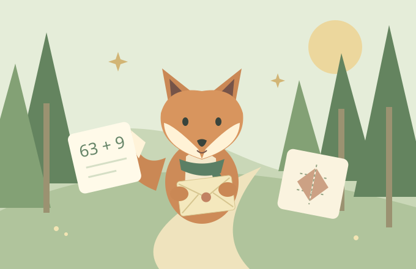
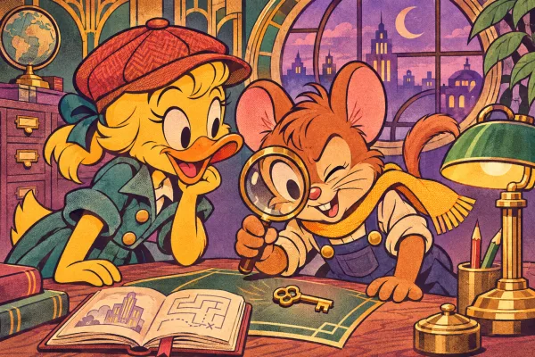
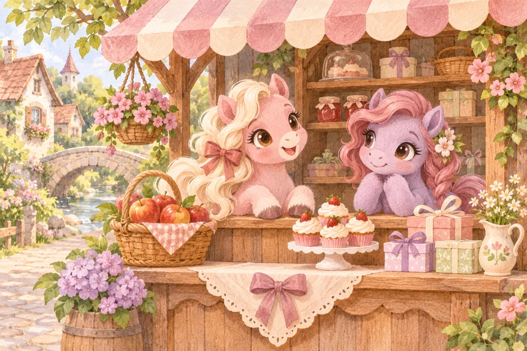
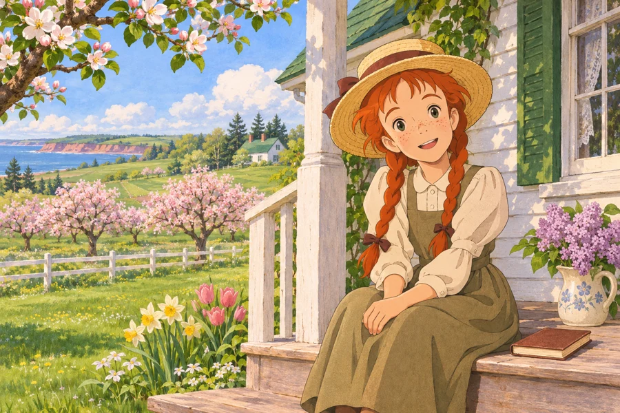

9 tematów · dwa działyPrzed kartkówkąOd około 7 lat
Leśna Akademia
List, ortografia, przyroda i matematyka. Poćwicz wybrany temat lub rozwiąż próbną kartkówkę.
Zagrajmy →Jedna kraina, wiele małych przygód. Wybierz grę, która pasuje do dzisiejszej ciekawości — i odkrywaj we własnym tempie.
Trochę nauki. Dużo radości.
Każda przygoda zaczyna się od kliknięcia.
Wybierz jedną z 9 gier

9 tematów · dwa działyList, ortografia, przyroda i matematyka. Poćwicz wybrany temat lub rozwiąż próbną kartkówkę.
Zagrajmy →
18 spraw detektywistycznychSzukajcie różnic, rozwiązujcie sudoku i łamcie szyfry z Franią i Fistaszkiem. Zagrajcie w pojedynkę lub we dwoje.
Zagrajmy →Zaplanuj drogę kaczki. Odkrywaj pętle, warunki i własne funkcje.
Zagrajmy →
Cztery działaniaOtwórz bajkowy sklepik. Dodawaj, odejmuj, mnóż i dziel z kucykami.
Zagrajmy →Dostarczaj listy, poznaj układ palców i pisz dokładniej na klawiaturze.
Zagrajmy →Poznaj tajemniczą liczbę. Pomóż Iksikowi zachować równowagę równania.
Zagrajmy →
Własna kostka 3 × 3Układaj swoją kostkę krok po kroku w spokojnym świecie Zielonego Wzgórza.
Zagrajmy →Dobieraj fryzury, makijaż i stroje. Zapisuj swoje ulubione stylizacje.
Zagrajmy →Wieczór ze Snape’em, księżycową magią i nieoczywistą dedukcją. Osobista kolekcja łamigłówek.
Otwórz gabinet →Możesz próbować, pomylić się i zacząć jeszcze raz.
Najważniejsze, że odkrywamy coś razem.